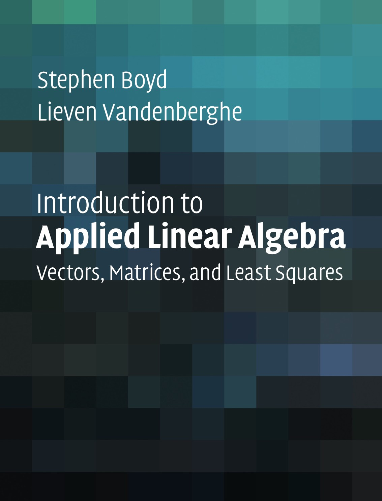
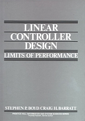

Stephen P. Boyd – Books
Introduction to Applied Linear Algebra
|  | Introduction to Applied Linear Algebra – Vectors, Matrices, and Least Squares |
Convex Optimization
 |
Convex Optimization |
Linear Matrix Inequalities in System and Control Theory
 |
Linear Matrix Inequalities in System and Control Theory |
Linear Controller Design – Limits of Performance
|  | Linear
Controller Design – Limits of Performance |